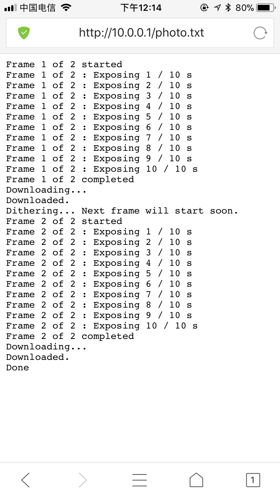
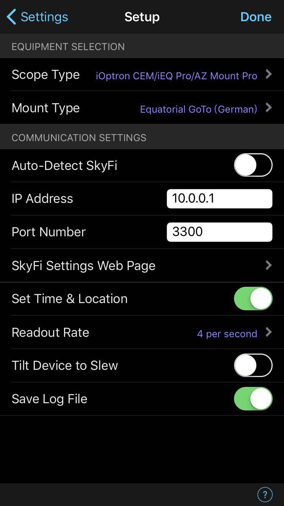
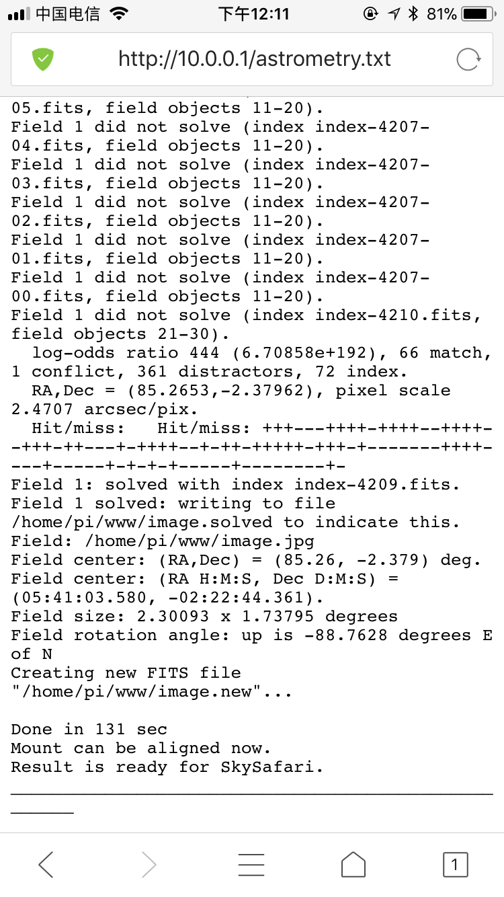

中文1.0手机版本基于原有iAstroHub 3.0 改动而来，原则上是支持所有iAstroHub 3.0所支持的设备的。但由于个人器材有限，目前只加入了单反的操作界面，如果有朋友能告知冷冻相机的操作流程协助测试，可以在后续版本加入并优化。可以在论坛留言，github留言，给我发论坛站内信都行，使用中碰到问题也欢迎留言，以便在后续的版本中加入更多的资料和说明。
1、相机曝光控制。先在管理页选择自己的相机类型（只需要选一次，下次使用或重启不用再次选择），然后在首页填写好参数，点开始，等待3-5秒，相机就会释放快门，可以通过首页底部的按钮查看相机日志，如果看不到可能是因为没刷新，可以刷新页面。成功曝光日志范例：
2、赤道仪控制。先在管理页面选择自己的赤道仪类型（只需要选一次，下次使用或重启不用再次选择），然后通过手机软件skysafari连接赤道仪，通过skysafari来移动和goto，skysafari的设置在Settings->TELESCOPE->Setup，可以看看 http://bbs.imufu.cn/forum.php?mod=viewthread&tid=292670 这贴，强烈建议多看一下，虽然是老版本设置不一定完全一样，但重在理解原理。我的设置界面如下：
3、图像忙解析同步赤道仪。goto完以后，先设定好相机ISO，曝光时间，拍一张照片，等完成以后，在首页盲解析那里点击开始，等待解析完成，可以通过首页底部的按钮查看解析日志，解析完成以后，点同步赤道仪，即可在手机上查看更新后的赤道仪指向位置，可以再次goto，或者开始曝光拍摄。成功解析日志范例：
4、导星。在导星之前需要先对lin_guider进行设置，可以用平板来操作，设置方法请参考附带的中文版说明书，lin_guider的介绍和说明可以参考 http://tinyastro.org/doc/lg 这篇文章，设置完成以后需要关闭lin_guider保存设置，重启系统，然后检查好导星CCD的连接（比如我用的qhy5liim，可以观察导星CCD尾部红灯亮起），在管理页面点击启动App。启动好之后再观察导星CCD尾部的红灯，可以看到红灯闪烁，则软件运行正常，然后就可以在首页选择亮星->校准->导星，则导星启动，可以在首页看到导星曲线。
1、启动APP前先连接好导星CCD、赤道仪、ST4线，如果没先连接好，容易出问题，出问题一般重启可以解决。
2、如果用D5100、D800相机，记得点设置页面的加载FTDI，然后再插拔一下B门线（B门线的制作论坛上发过帖子可以参考），再在相机选择 FTDI-(ttyUSB0) 或者 FTDI-(ttyUSB1)，可以都试试，选好之后在首页试一下看能否成功曝光。
3、在首页底部监测那里可以看到监控时间，在相关功能工作的时候这个时间会启动并往前走，停止的时候时间不会动，可以点击查看日志来观察系统更加详细的工作过程。
4、管理页的设置项一般都只需要设置一次，重启系统都会持续有效。
5、多看说明书，多看日志有助于更好的理解使用系统。
6、如果会用Linux，可以通过MobaXterm远程ssh到树莓派上，账号root，密码raspberry，直接看源码有更多惊喜。
7、用完记得先关机再拔电源。